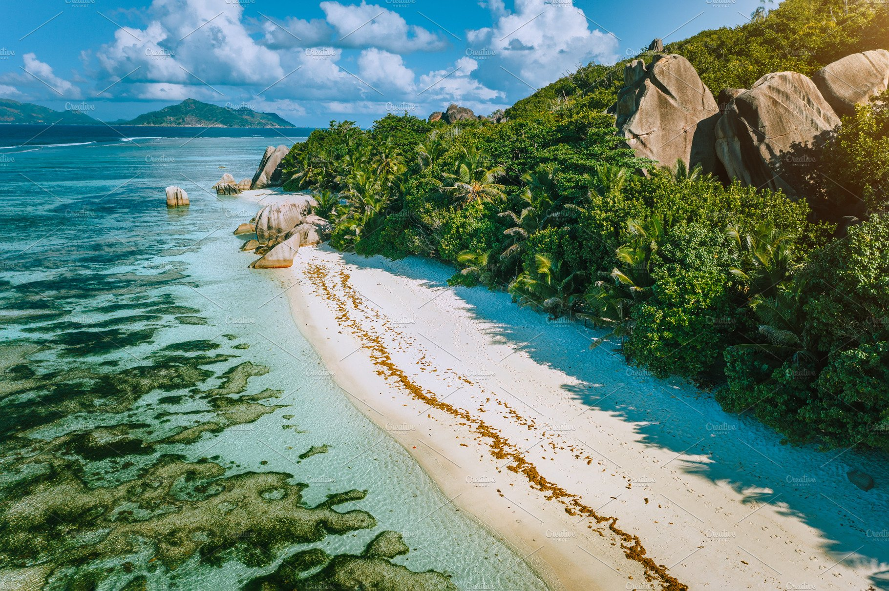

He defined nature as the set of physical, chemical, and biological factors that affect living organisms or the ecological community, and determine its form and survival.
There are many roles and functions that nature performs, the most important of which are the following:
-
Continuous provision of resources, as nature contributes to providing basic production resources, including both renewable and non-renewable resources.
-
Maintaining the sustainability of life by providing genetic and biological diversity, in addition to the things necessary for human life, such as: sun, soil, water, and air.
-
Waste disposal , as consumption and production activities produce different forms of waste, and nature helps to get rid of them.
-
Enhancing the quality of life, as nature adds a lot to the quality of life of individuals by allowing them to enjoy the beauty of nature from rivers, mountains, and seas.